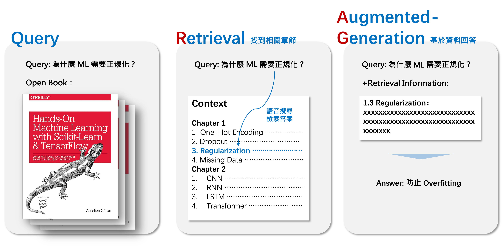
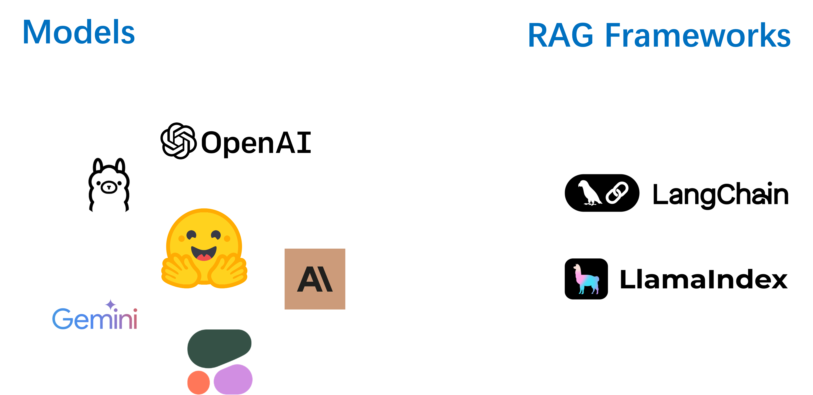
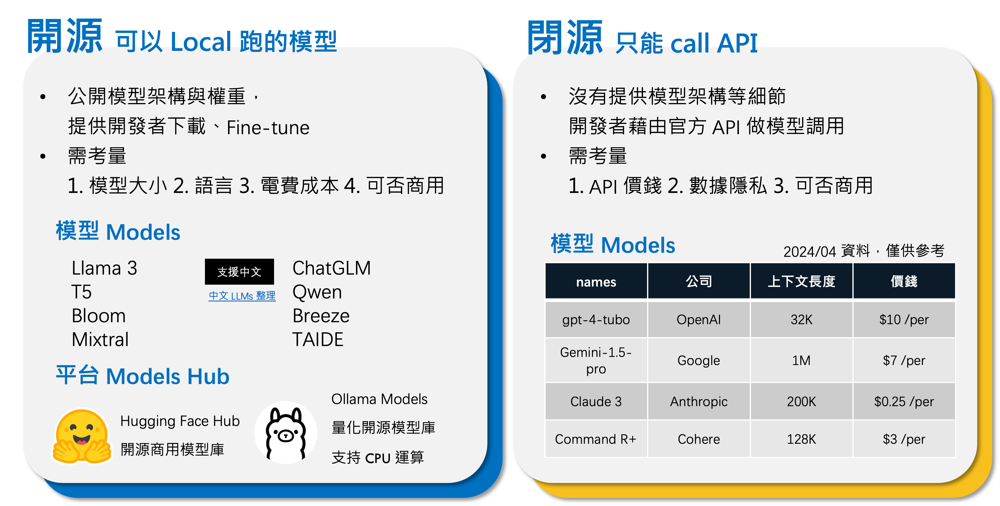

什麼是 RAG｜就像讓裸考的你 open book 考試
什麼是 RAG｜就像讓裸考的你 open book 考試
這次希望和大家介紹：
- RAG 是什麼，為什麼要使用 RAG
- 簡單使用 Hugging Face 實作具有檢索功能的聊天機器人
RAG（Retrieval-Augmented Generation）由 Patrick Lewis 等人於 2020 年提出，是一種 AI 框架，旨在通過提供外部資料知識來提升 LLM（大型語言模型）的回答質量和準確性。這有點像在沒有學習過相關知識的情況下進行考試的考生，在考試中使用開卷答題的方式來彌補知識的不足。具體來說，當 LLM 對某些特定資料的回覆不足時，RAG 可以提供外部資料來輔助回答問題。
舉一個簡單的例子來說明，假設我們問 LLM「為什麼 ML 需要正規化？」如果這個模型沒有學過機器學習的相關知識，它可能不知道正規化是什麼意思，以及正規化對機器學習建模的影響。但如果我們能夠提供一份關於機器學習的書籍，LLM 就能夠在回答「為什麼 ML 需要正規化？」這個問題時，檢索書籍中語意最相近的段落，並基於這些段落來回答問題。這個過程就是 RAG 的工作流程：提供額外資訊給 LLM，讓它進行檢索並基於檢索到的資訊來回答問題。

為什麼要使用 RAG？
如同一開始所提到的，LLM 因為訓練資料的限制，先天上有一些問題導致在實際應用時需要進行微調，否則 LLM 的回答可能不會達到我們的預期。
LLM 不擅長的事
缺乏最新、私人的資料
LLM 只根據訓練資料進行回答，它對於語言的理解以及基本常識有很強的能力，但如果使用者的問題過於特定，超出訓練集的資料內容，LLM 無法提供準確、有用的答案。例如，詢問 LLM「現在的總統是誰」或「我們公司的軟體操作問題」。對於專業問題回答的幻覺
由於資料集的分佈問題，某些特定領域的資料一定佔少數，而通用型 LLM 並非在專業領域知識的背景下訓練，回答時常會充滿幻覺，並非真正有用的答案。例如，當涉及法律、醫療等專業知識時，LLM 的回答通常會失準。
什麼是 RAG？
針對以上問題，提出了一種將 LLM 與額外知識庫整合的架構，即為 RAG。透過給 LLM 額外的知識、資料，讓 LLM 可以給出可靠、準確的回應。以下介紹 RAG 的工作方式及其各環節涉及到的問題和可能的解決技術。
簡單來說 RAG 得步驟有兩點：
檢索（Retrieval）
依據 User 的問題從額外提供的資料中找出最相關、可以回答該問題的文件、段落。
在檢索階段，我們需要
收集資料
我們需要收集該應用所需要的可能資料，例如：內外規比對機器人需要內部與外部的法規文件、商品客服機器人需要各商品的資料。資料切分
以內外法規比對為例，內部法規可能是一份超過千頁的 pdf 檔案，我們需要將其依據章節、字數分成不同的部分，這樣每個資料都代表特定的主題，避免我們在檢索時，提供太多不需要的資訊，而增加 LLM 回答的不可控性。而將資料切分的過程我們稱為 Chunking，每一份資料則為一份 Chunk。
以下為一些進行 Chunk 時可以使用的技術，以提升 Chunk 品質：- Sliding window
在切分時，每一份 Chunk 會保留前後 Chunk 的資訊。 - Metadata filtering
Metadata 包含了許多關於資料的重要資訊，可以在一開始藉由 Metadata 過濾掉不相關的資料，例如：時間、類別等。 - Abstract Embedding
將每一份 Chunk 先進行摘要，可有效的壓縮並保留資訊，以提升後續做 Embedding 時的表現。 - Graph Indexing
加入每一份 Chunk 的關係。 - Semantic Chunkking：基於語意而非字數做文本的切割。
- Sliding window
語意搜尋
準備好 Chunk 後，我們需要一個嵌入模型 Embedding Model 幫我們將 Chunk 以向量的方式表達其語意特徵，我們可以透過將其與 User 的向量進行相似度運算，比較出哪一部分的 Chunk 與 User 的問題最相似。
而如何真正理解 User 的問題，進而找到相關的段落，我們可以做一些 Query Translation：- Query Rewriting
指示 LLMs 針對檢索任務重新撰寫 Query。 - Multi-query
有時後 User 的問題可能包含多個含義、問題，透過 LLM 將 User 的問題拆成多個子問題再進行檢索。 - RAG-Fusion
當 User 對於問題不夠明確時，透過 LLM 將問題換句話說，轉換成多個意思相近的 Query 後進行檢索，將檢索結果進行綜合排序得到較好的檢索結果。 - Step-back
利用 LLM 猜想 User 問題的抽象概念，也就退後一步思考 User 可能的意圖。 - HyDE
藉由 LLM 生成「假想的回答」，再依據假想的回答進行答案的檢索，通過比對「假想」和「真實」資料中的差異，捕捉語意。
- Query Rewriting
增強生成（Augmented-Generation）
將檢索到的資料與 User 的問題結合，透過生成器產生順暢、可理解、準確地回答，通常將資料一起餵給訓練好的 LLM，讓其統整上下文訊息回答。
依賴訓練好的 LLM 回答通常可以達到不錯的效果，但依舊會遇到一些問題，例如 1. 上下文長度限制 2. 受冗餘資訊影響生成 3. 檢索的結果並不包含有用的資訊，所以有一些研究在於專注擷取資訊的的後處理，處理第一階段檢索的資料，將其過濾、壓縮、最佳化提升檢索的資料品質，藉以提升模型回答，主要有兩種做法：
- Re-Ranking
LLM 會受到上下文長度限制，故藉由 Re-Ranking 將真正重要、相關的文件排序在前面，限制文件數量，解決上下文長度限制以及檢索資料的品質。 - Self-RAG
透過 LLM 反思、修正檢索的結果，其中涉及到 1. 評估是否要進行檢索 2. 評估檢索語回答的相關性與準確性，挑選最佳組進行回答。
簡單的 RAG 實作
到了 Demo 時間！我們將簡單實作一個具有檢索功能的聊天機器人，使用 Hugging Face 的 Pipeline 與 Conversation 能非常迅速的實作。在這之前，還是跟大家介紹一下實作 RAG 你會需要的工具。

Models
簡單來說我們需要兩種模型：1. Embedding Model 2. ChatModel。
我們需要 Embedding Model 協助我們進行語意搜尋，ChatModel 將檢索結果與 User 問題結合，進行回覆。- Embedding Model： 我們可以從 Hugging face 中的 feature-extraction Model 尋找，或是直接使用 Sentence-Transformers 套件。
- ChatModel：我們可以從開源的模型庫，例如 Hugging face hub or Ollama 下載，或是使用閉源模型的 API。
Frameworks
如果 Pandas 之於數據分析、Scikit-learn 之於機器學習，我們也需要一些框架來協助我們實作 RAG，以更快速完成上面所介紹的技術（當然你也可以自行手刻），目前主流框架有 1. Langchain 2. Llamaindex。
在這次的 demo 中，我們將簡單的使用 Hugging face 的 Pipeline 與 Conversation 來實作 RAG。
demo
- 準備 ChatModel
我們使用 Hugging Face 下載模型，範例中我們使用聯發科的MediaTek-Research/Breeze-7B-32k-Instruct-v1_0，利用 AutoModelForCasualLM 實例化模型，再傳入帶有text-generation任務的 pipeline 中，完成 chatmodel 的初始化。
1 | from transformers import pipeline |
- 聊天記錄前處理
聊天式模型，例如 ChatGPT，基本上是透過 text-generation 作為基礎模型，進一步訓練模型以實現聊天功能。因此，在 Hugging Face 上找到的任何支持 text-generation 任務的模型都可以用來實現聊天功能。
在進行聊天任務時，模型需要一些特殊符號來區分每一段訊息是來自於使用者（User）、AI 還是系統提示（System Prompt）。各個模型的特殊符號可能不盡相同，需要參考官方文件來了解。例如，在聯發科的 Breeze 模型中，使用 [INST] 和 [/INST] 作為區隔符號。
使用模型時，我們需要在文字中加入這些特殊符號，才能充分發揮模型的聊天能力。通常，我們會使用 list of dict 的方式儲存聊天記錄，使用 role 區別 user 和 ai，content 代表內容，而 Hugging Face 的模型也支援這樣的格式。例如：
1 | chat_history = [ |
我們可以透過實例化 Conversation 這個 class，透過 add_user_input 與 append_response 新增歷史使用者輸入與模型回覆，將資料變為上述的資料格式再送給模型進行推理。
1 | from transformers import Conversation |
利用 add_user_input 新增 user 聊天記錄：
1 | conversation.add_user_input("provided information: the name of repo is bert-base-uncased. Based on the provided information, what is the name of repo?") |
目前聊天記錄：[{‘role’: ‘user’, ‘content’: ‘provided information: the name of repo is bert-base-uncased. Based on the provided information, what is the name of repo?’}]
將 conversation.messages 丟給 chatbot 得到回覆：
1 | chatbot_result = chatbot(conversation.messages) |
[{‘generated_text’: ‘根據提供的信息，repo的名称是”bert-base-uncased”。’}]
將 chatbot 的回覆以 append_respons 的方法加入 conversation 中
1 | conversation.append_response(chatbot_result[0]['generated_text']) |
目前聊天記錄：[{‘role’: ‘user’, ‘content’: ‘provided information: the name of repo is bert-base-uncased. Based on the provided information, what is the name of repo?’}, {‘role’: ‘assistant’, ‘content’: ‘根據提供的信息，repo的名称是”bert-base-uncased”。’}]
- Embedding Model
我們透過 Embedding Model 將文件與 User query 轉成語意向量，使用相似度進行匹配，我們可以在 Hugging Face 中於 Task 以 feature-extraction 找到 Embedding model，也可以直接使用 sentence-transformers 套件將句子轉成向量。
1 | from sentence_transformers import SentenceTransformer |
1 | # 利用 encode 得到 sentence 的 embedding |
array([ 0.03142083, -0.01894771, -0.00766944, …, -0.02039895,
-0.01210877, 0.03742645], dtype=float32)
有了向量之後，我們就可以利用迴圈與 cosine simialrity 進行匹配，找出最相似的句子，下面舉一個簡單的例子，我們計算 query 與 source_sentence 中所有句子 embedding 的 cosine similarity，並選出最相似的句子，得到與「為什麼 ML 需要做正規化」最相似文本是 「Regularization is important!」。
1 |
|
為什麼 ML 需要做正規化 vs Regularization is important! similarity: 0.86
為什麼 ML 需要做正規化 vs Dropout is important! similarity: 0.80 為什麼 ML 需要做正規化 vs Missing Data Handling is important! similarity: 0.81 ========== 與「為什麼 ML 需要做正規化」最相似文本：Regularization is important!
- 整合在一起！
我們準備一個 list 當中包含了想要檢索的資料，在 while 迴圈中： - User 輸入 query
- 透過 Embedding Model 計算 query 與 source_sentence 中所有句子的 cosine similarity，選出最相近的句子
- 將 query 與最相近的句子一起傳入 conversation.messages 並送入 chatbot 得到回覆
- 將 chatbot 回覆加入 conversation.messages
1 | qa_data = [ |
1 | user_query = input(">>>") |
如此一來，就完成一個簡單的具有檢索功能 chatbot 了！🎉
參考資料
Retrieval-Augmented Generation for Knowledge-Intensive NLP Tasks
RAG (Retrieval Augmented Generation): 為自然語言處理揭開新篇章